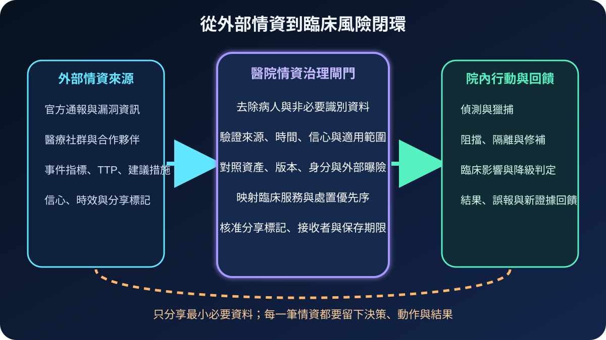
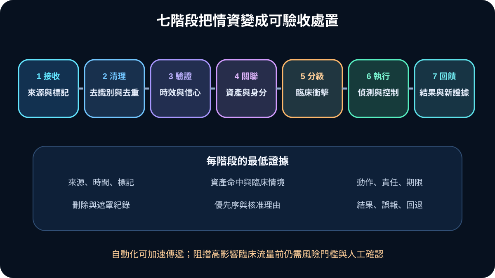
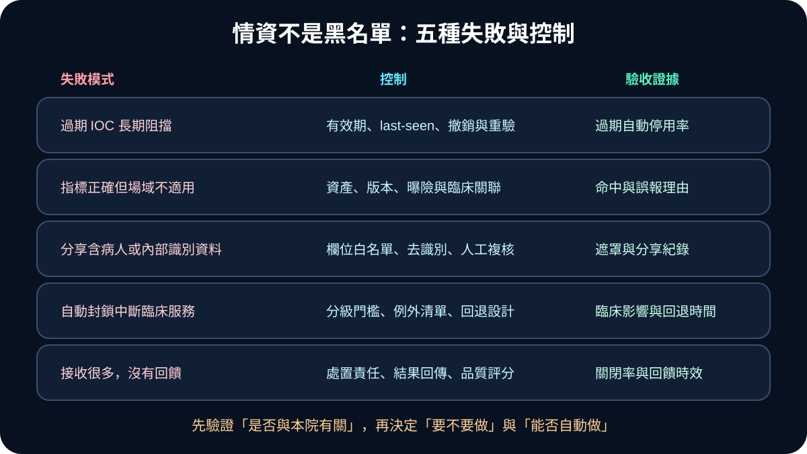

醫療資安國際觀察 · 2026-11-22
醫療威脅情資如何安全分享並形成處置閉環：從去識別到臨床分級
作者：Dr. William｜醫療資訊與資安治理實務工作者
醫院收到惡意網域、檔案雜湊或攻擊手法後，真正的治理工作是確認情資是否可信、與本院是否相關、能否安全分享，以及如何在不誤傷臨床服務的前提下完成處置與回饋。
名詞解釋：IOC、TTP、STIX／TAXII 與分享標記
IOC 是惡意 IP、網域、雜湊等可觀測指標；TTP 描述攻擊者的戰術、技術與程序，通常比單一指標更耐久。STIX 用結構化格式表達威脅資料，TAXII 支援系統間交換。分享標記用來限制接收者與再散布範圍；它不能取代病人資料、員工資料、內部架構與事件細節的最小化。
國際現況與適用邊界
HHS ASPR TRACIE 於 2026 年 10 月更新醫療資安主題彙整，要求醫療機構持續掌握威脅並把應變、停機與病人安全納入準備。CISA 的 Automated Indicator Sharing 以結構化、雙向交換方式傳遞指標與防禦措施，並要求依標記處理；其 FAQ 也指出接收端仍須依自己的門檻與優先序決定動作。NIST SP 800-150 則把分享目標、來源、範圍、發布規則、信任社群與有效使用納入完整治理。
法域與適用原則：CISA AIS 的美國法律安排、參與條款與責任保護不直接適用台灣醫院。台灣機構可參考結構化交換、標記、資料最小化與回饋機制；實際分享仍須依台灣法規、契約、主管機關要求、病人隱私及院內事件程序判定。
規劃：先定義分享目的、資料邊界與臨床門檻
治理範圍應列明情資來源、接收社群、可分享欄位、禁止欄位、標記規則、保存期限、資產清冊、臨床服務對照、阻擋門檻與緊急回退。SOC 負責驗證與關聯；系統、網路及身分團隊執行控制；隱私與法務核對分享邊界；臨床與營運單位決定高影響控制的停止條件。驗收指標可包含有效情資處置時間、資產關聯率、過期自動停用率、誤報率、臨床影響件數與回饋完成率。
實作：七階段形成可驗收閉環
- 接收：保留來源、時間、信心與分享標記。
- 清理：去重、正規化，刪除病人與非必要識別資料。
- 驗證：檢查時效、來源一致性、撤銷狀態與適用範圍。
- 關聯：對照實際資產、版本、身分、網路與外部曝險。
- 分級：加入臨床重要性、替代流程與可能誤傷。
- 執行：依風險採獵捕、告警、阻擋、隔離、修補或監看。
- 回饋：記錄命中、誤報、處置結果、新證據與撤銷需求。

風險：情資正確仍可能造成錯誤處置
過期 IOC 可能封鎖已轉為正常用途的基礎設施；外部指標也可能與院內版本無關。未清理的分享內容可能暴露病人、員工或內部架構；自動阻擋則可能中斷醫療設備、雲端介接或合作院所連線。控制重點是有效期、場域關聯、欄位白名單、分級門檻、例外與回退，以及把處置結果回饋給來源與院內風險紀錄。

可執行清單
- 是否記錄每筆情資的來源、時間、信心、標記與有效期？
- 分享前是否移除病人、員工及非必要內部識別資料？
- 是否對照實際資產、版本、身分、網路與臨床服務？
- 高影響阻擋是否具人工確認、例外與快速回退？
- 過期、撤銷與誤報指標是否會自動停用並通知使用者？
- 是否保存動作、責任人、期限、結果與臨床影響？
- 是否將新證據與品質回饋送回分享社群或內部來源？
來源
- HHS ASPR TRACIE｜Topic Collection: Cybersecurity（更新：2026-10-09；查閱：2026-11-22）
- CISA｜Automated Indicator Sharing Terms of Use v2.3.1（版本：2.3.1；查閱：2026-11-22）
- CISA｜Automated Indicator Sharing FAQs v2.0（版本：2.0；查閱：2026-11-22）
- NIST｜SP 800-150 Guide to Cyber Threat Information Sharing（發布：2016-10-04；頁面更新：2021-05-04；查閱：2026-11-22）
內容說明
本文依健康台灣深耕計畫相關治理內容整理，並參考 HHS ASPR、CISA 與 NIST 官方資料，說明醫療威脅情資的分享邊界、院內關聯、臨床分級、處置與回饋；不把美國制度或參與條款視為台灣醫療機構的直接法定義務，也不取代主管機關要求、隱私審查、事件鑑識或臨床判斷。